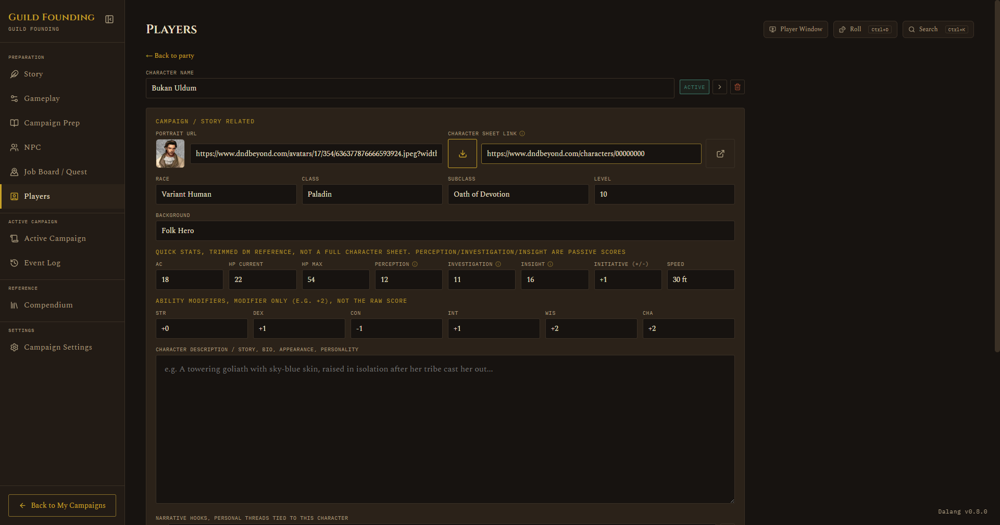
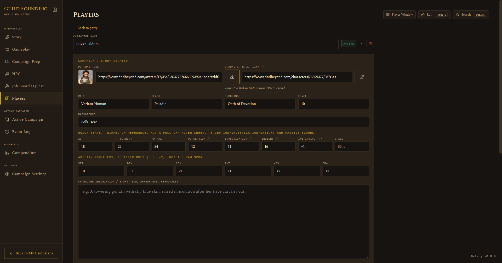

Players
Preparation · Players
On this page The roster Importing from D&D Beyond
The roster
A roster of character cards, toggle each Active or Inactive. Only Active characters show up on the Active Campaign tab. Click into a card for the full character sheet: race, class, subclass, level, quick stats (AC, HP, passive perception, etc.), ability modifiers, description, and a couple of DM-only fields like player nickname and personal notes. Portrait URL and Character Sheet Link sit at the top of the sheet, above Race/Class/Subclass/Level.

AC now shows up wherever it matters mid-session too: the token popup you get from clicking a combatant during a fight, and the Party Present popup on Active Campaign, which also shows Subclass and passive Investigation/Insight alongside passive Perception. Picking a player to add to a fight shows their class and level in the picker, the same as monster and NPC rows already did.
Importing from D&D Beyond
If a player already built their character on D&D Beyond, you don't have to retype everything by hand. Paste their character URL in and the app fills in as much as it reliably can.
The character's D&D Beyond visibility needs to be set to Public first, a private sheet can't be read. This is a setting on D&D Beyond's own site, not something Dalang controls.
- Open the player's card and paste their D&D Beyond character URL into the Character sheet link field.
- Click the download icon next to the field to import.

What gets filled in:
- Race, Class, Subclass, Level, Background
- AC and HP (current and max, including the Constitution contribution)
- Passive Perception, Investigation, and Insight
- Ability modifiers and initiative
- Walking speed
- Portrait
- Personality traits, ideals, bonds, and flaws, appended to Narrative Hooks rather than replacing it, so anything you already wrote by hand survives a re-import

A few things it deliberately doesn't try to cover: unusual AC sources like racial natural armor, Draconic Resilience, dual-wielding fighting style bonuses, or a custom AC formula are left blank rather than risking a wrong number for something that matters in combat. Feats and items that modify movement speed beyond the base walking speed aren't accounted for either.
If the character can't be reached (private sheet, D&D Beyond is slow to respond, or the URL doesn't look like a real character link), you'll get a clear error instead of the import hanging indefinitely.